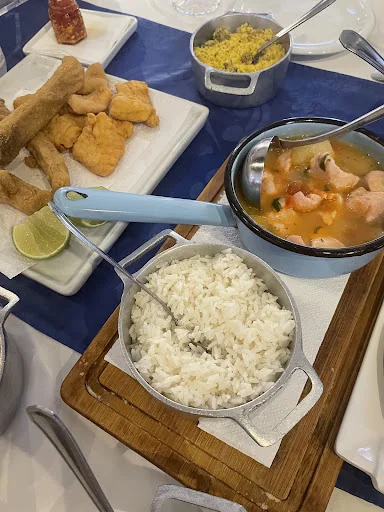
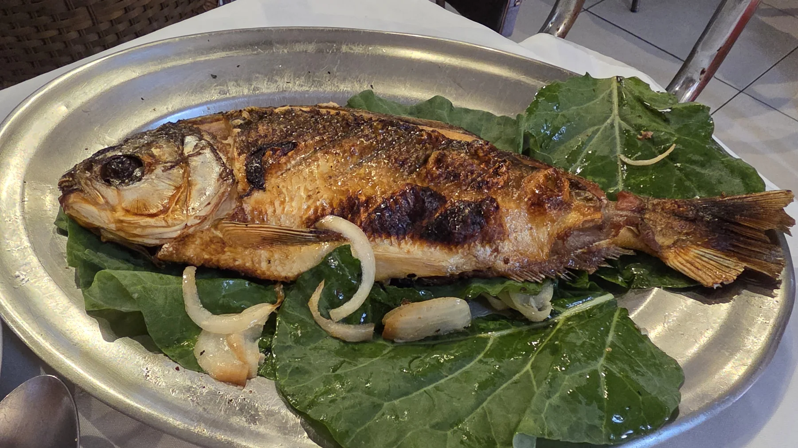
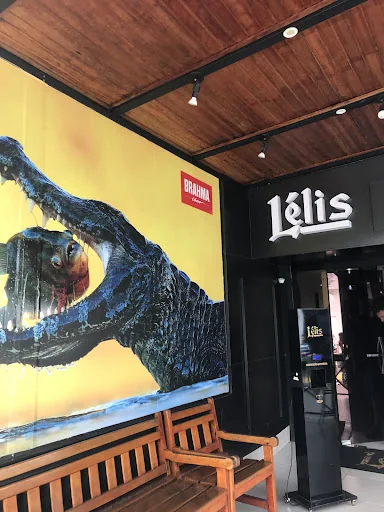
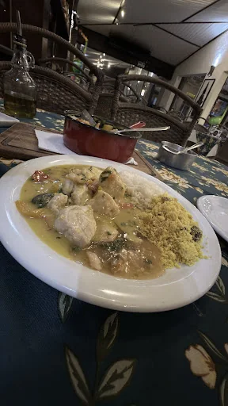
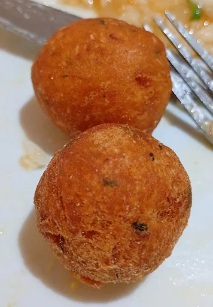
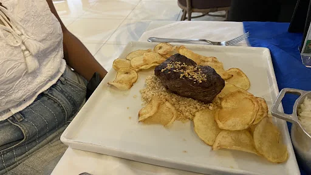
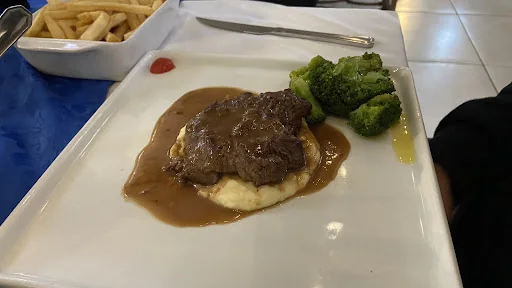
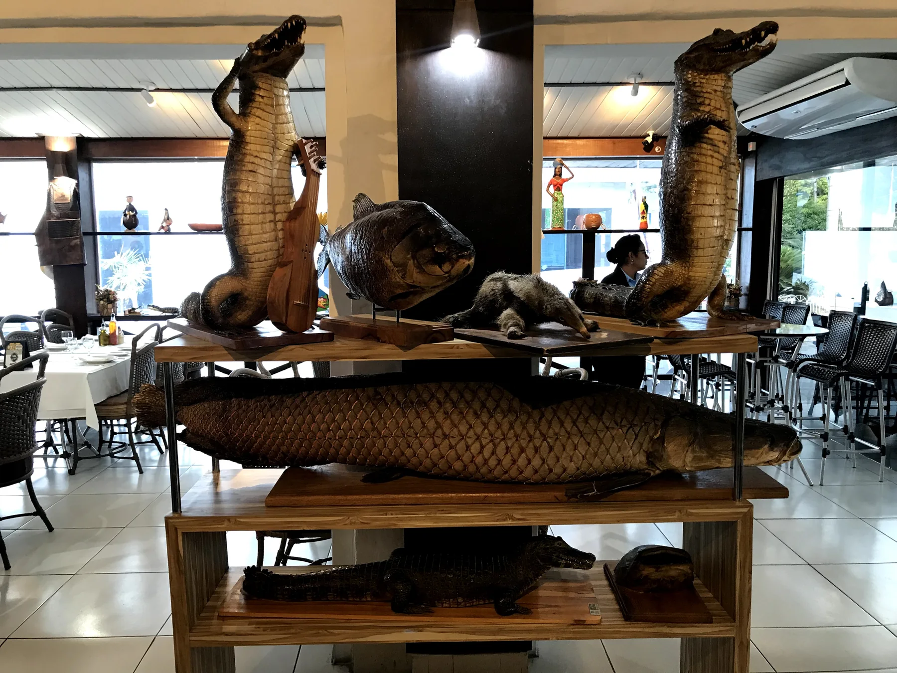
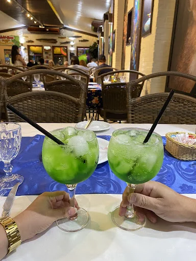

01 · REGIONAL
Peixe frito
Peixe frito
& acompanhamentos
Mujica, arroz e farofa de banana em uma mesa com sotaque de Mato Grosso.
Peixes de rio, receitas regionais e uma casa que transforma o sabor de Mato Grosso em experiência.
Restaurante & peixaria
em Cuiabá, MT

Uma casa com identidade

Uma experiência que nasce dos peixes de água doce e encontra na cozinha cuiabana seu sotaque mais forte.
O ambiente mistura madeira, referências do Pantanal e uma coleção visual que já deixa claro, antes do primeiro prato, de onde vem a inspiração da casa.
À mesa
Uma seleção visual de pratos e experiências registradas na casa. Disponibilidade pode variar.

Mujica, arroz e farofa de banana em uma mesa com sotaque de Mato Grosso.

Caldo encorpado, peixe e acompanhamentos para comer sem qualquer cerimônia desnecessária.

Uma das preparações que aproximam a experiência da fauna e da culinária regional.

Um clássico bem servido para quem também busca opções além dos peixes.

Uma alternativa de perfil mais clássico entre as opções fotografadas na casa.
“Comer aqui é reconhecer o Pantanal sem precisar explicar o Pantanal.”
Dentro da casa


Visite a Lélis
R. Mal. Mascarenhas de Morães, 36
Duque de Caxias II · Cuiabá — MT
Seg–Sex · 11h–15h / 18h–23h
Sáb–Dom · 11h–15h30
(65) 3322-9195